Where the Law Runs Out
Three complex systems, one measured claim: typical behavior obeys sharp laws, and the events that matter escape them.
GitHub· Sandpile report (PDF)· Flocking report (PDF)· Findings: flock sandpile earthquake
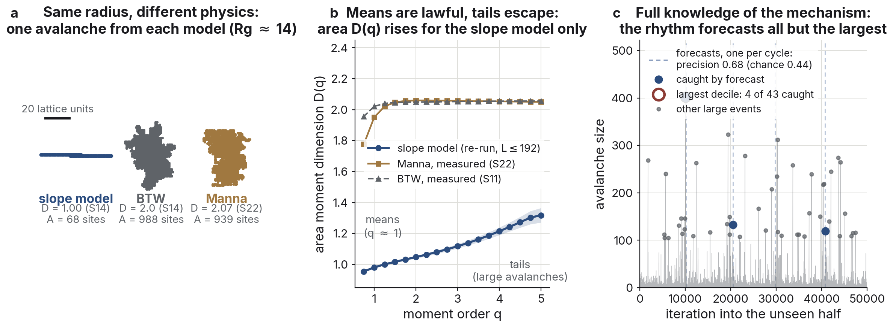
At a glance
-
I · The flock94 findings
An aligned flock is a directional averager: independent errors cancel at the statistical rate (heading error falls as 1/√N, fitted slope −0.52), and only a shared signal moves the group. Leadership, collective escape, and misinformation are the same lever; a coordinated falsehood captures the flock at exactly half.
-
II · The sandpile22 findings
The typical avalanche is a one-bond-wide ballistic filament, exactly single-scale in space (D = 1.00); the distribution's tails stay multifractal at every size reached. Measured under one pipeline against BTW and Manna, the model matches neither.
-
III · The earthquake model7 findings
Dissipation gives the deterministic model a near-periodic clock that forecasts routine large events at 1.5 to 1.7 times chance. The largest decile does not ride the cycle: the forecast catches 4 of 43.
-
What held and what broke9 self-tests · 10 corrections
Nine predictions were written down before their measurements ran; several broke. Ten corrections are kept in the record, and one result, the repose's logarithmic growth, was confirmed out of sample at held-out lattice sizes.
Abstract
Over one summer I built and measured three canonical models of collective behavior: a flock of aligning agents, a sandpile that organizes itself to a critical state, and the Olami–Feder–Christensen earthquake model. Each started as a textbook exercise and ended somewhere the textbook does not go. The same pattern kept turning up in all three. Typical behavior obeys laws sharp enough to fit to two decimal places: an averaging law in the flock, an exact spatial scaling law in the sandpile, a recurrence rhythm in the earthquake model. And in each case the events that matter most slip out from under the law by a route you can measure. Correlated signals defeat the flock's averaging. The sandpile's largest avalanches stay multifractal while its typical ones turn exact. The earthquake model's biggest events fall off its clock even though the mechanism is fully known.
The claim
Complex systems have a lawless reputation, and it is earned: nobody can say where the next avalanche will go. But sit with these systems long enough to measure them properly and the reputation hides a split. In each system I studied, the typical event is governed by a law that holds to experimental precision, while the exceptional events (the largest avalanches, the biggest earthquakes, the coordinated attack) escape that law along a specific route. The escape route is itself measurable. The law does not fade out at the edges; it fails in a specific way, and the way it fails is a finding.
The flock is a directional averager. Independent errors cancel at the rate statistics promises, with heading accuracy improving as the square root of group size, and no amount of uncorrelated noise changes where the flock goes. It turns out the only thing that moves a flock is a shared signal, and that one lever has three names depending on who pulls it: leadership, escape, misinformation.
The sandpile's typical avalanche is a one-bond-wide ballistic filament that obeys an exact single-scale law in space. The avalanche-size distribution's tails, meanwhile, are multifractal at every system size I could reach, and the discrepancy survives extrapolation to infinite size. The mean and the tail are different objects.
The earthquake model is deterministic and fully known. There is no hidden mechanism and no observation noise, so a forecaster has every advantage it could ask for. Its quasi-periodic rhythm forecasts ordinary recurrent events at 1.5 to 1.7 times chance. On the largest ten percent of events, the ones an actual seismologist would care about, it catches 4 of 43.
The rest of the page gives the measurements behind each of those sentences, and then the checks: the pre-registered self-tests, the predictions of mine that failed (there were several), and the one result confirmed out of sample.
Chapter I — The flock: an averager and its one weakness
The model comes from Silverberg and colleagues' 2013 study of mosh pits: N self-propelled agents on a periodic plane with short-range repulsion, alignment, and noise. That is the whole model. The first weeks went to validation, which produced two results of its own. The first is an exact law: the equilibrium cruise speed is v0 + α/μ, not the nominal v0. The second is a clean negative that took five findings to nail down: the solid-to-fluid change in this model is a smooth crossover, not a phase transition, at every compactness and repulsion hardness I could reach. After that the chapter asked one question in different forms: what moves a flock, and what does not.
Give every agent a private, noisy estimate of a goal direction and the flock's heading error shrinks as one over the square root of N; the fitted slope across group sizes is −0.52 against a predicted −0.5. In practice a flock of hundreds navigates accurately on per-agent information that would leave any individual lost.
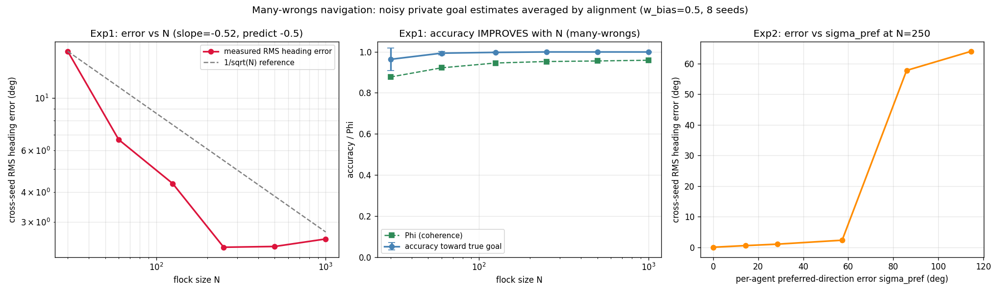
Correlation is the one thing that beats it. Make the errors correlated, even slightly, and the improvement stops at a floor proportional to sigma times the square root of the correlation. No group size pushes through that floor. Misinformation is the same measurement run adversarially. Planted at random it is nearly harmless (heading accuracy 0.998 with half the flock misinformed), but a coordinated falsehood captures the group at exactly parity. What damages a collective estimator is the correlation of its errors, not the amount.
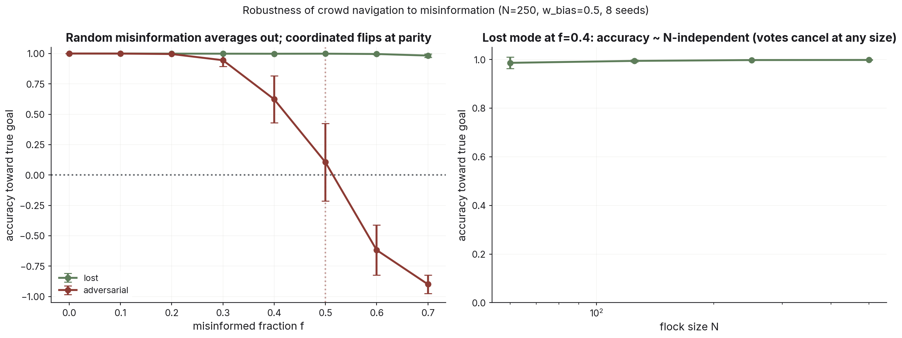
The predator arms race resolved on the same principle. Naive predators fail: they co-localize at the flock's center of mass and end up chasing the same few agents. The first strategy that genuinely disrupts is encirclement. Six predators on angular stations cut coherence to 0.77 and split the flock into sub-flocks that are internally almost perfect (coherence 0.997), which looks a lot like wolf-pack herding. The decisive upgrade is anticipation: a ring placed on the flock's predicted position, about two time units ahead, drops coherence from 0.83 to 0.53. The counter that defeats even that is collective escape, every agent fleeing the shared predator centroid. It restores coherence to 1.0, but only above a sharp weight threshold, and only if the escape vector is globally shared. Weak escape does worse than none. Locally sensed escape never gets more than partway. The flock acts on shared signals and averages away everything else. I measured that separately in leadership, in misinformation, and in evasion, and it held every time.
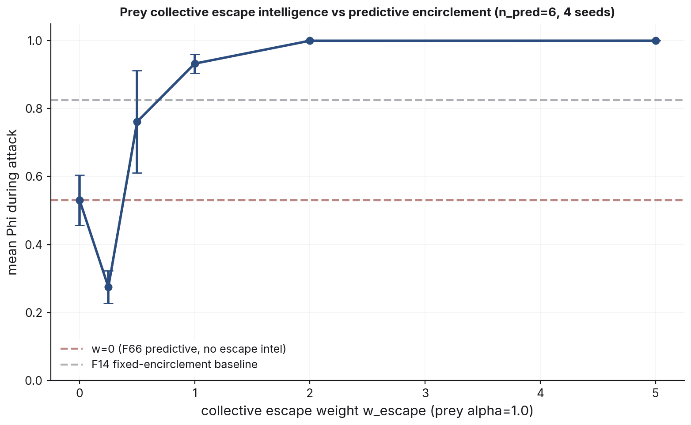
Then I asked whether the defense could evolve. Make the escape weight a heritable trait under capture-and-removal selection. Escape is a strong attractor once present: seeded at full strength it stays, costs almost nothing, and cuts captures enormously. It also cannot originate. Starting from zero, selection crawls to a mean weight near 0.5 in 400 time units and stalls, because weak escape sits in a fitness valley below no escape at all, and evolution will not cross a valley to reach an attractor it cannot see. Seed a five percent escaping minority instead and escape establishes easily, settling at a mixed equilibrium around sixty percent escapers. The signal is shared and non-excludable, so free riders persist, at every predation pressure I tried. A control experiment separated the two mechanisms. Make alignment strength the heritable trait instead: same origination brake, but a seeded high-alignment minority does not invade at any fraction or mutation size. Escape is a free-rideable shared signal. Alignment is a mutual coupling that pays only when your neighbors already have it. Whether a collective defense can invade comes down to whether free riders can share it.
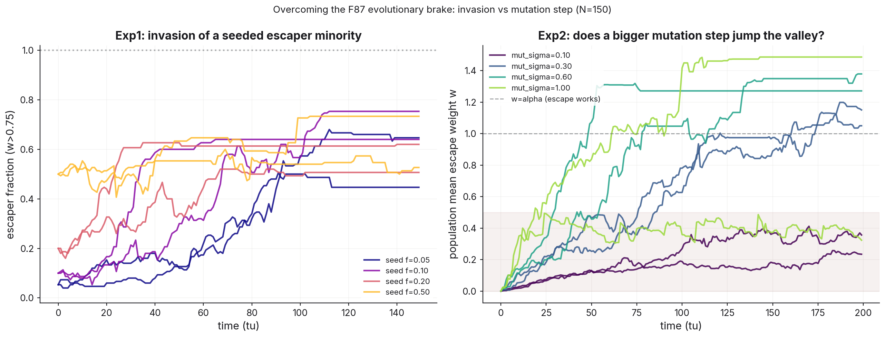
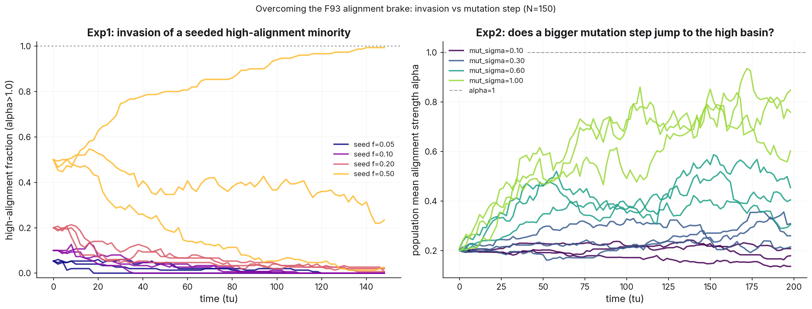
One more result belongs here for what it rules out. Vaccinating a flocking population against a contact epidemic, every standard targeting strategy lost to random chance, and each loss has an identifiable reason. Degree targeting fails structurally: kinematic mixing leaves no persistent hubs to find. Spatial targeting fails kinematically: mixing erases any spatial coverage within a few time units. The only strategy that beat random, by a factor of two to three, targets a per-agent invariant, the slow recoverers who act as infection reservoirs, and that advantage survived three dimensions, continuous rate distributions, observation noise, and rare-reservoir regimes. In a well-mixed collective, structure is transient. Only what an agent is persists long enough to target.
Chapter II — The sandpile: one avalanche, one theory
The model is Charbonneau's slope sandpile: continuous heights on a lattice, slow random forcing, and a toppling rule that fires when the slope between neighbors exceeds a threshold, halving the difference. The boundary is open, so sand leaves at the edge. In two dimensions I used the same bond rule in both directions, so the 2-D model reduces exactly to the 1-D one. That choice looked minor and turned out to carry the chapter. The early findings established the basics: the model self-organizes to criticality, bulk conservation is necessary for it (any bulk dissipation truncates the avalanche distribution at a dissipation-set scale), and its exponents differ cleanly from the canonical BTW sandpile's. Same phenomenon, different universality class. Validation also caught a small textbook error: the book reports the pile settling about 7% below the critical slope, which conflates the mean slope with the peak. The mean sits about 16% below, and the book's own figure back-calculates to the same number.
The question that occupied most of a month was what a slope-model avalanche actually is. The answer built up over eight findings into a single object.
The geometry
I recorded every avalanche's footprint, the set of bonds that toppled, and measured its mass-radius dimension: D = 1.00 at every lattice size. The avalanche is a filament. 98% of footprints are exactly one bond wide, the width stays constant as they grow, and the front that lays them down is ballistic: first-topple time equals distance from the seed with correlation 0.99. For calibration, the exactly solvable directed sandpile has D = 3/2 and BTW has D = 2. This object is thinner than both. The footprints in Figure 5 are single lines.
![Six panels. Top row: three avalanche footprints of increasing size, each a single straight one-bond-wide line of sites colored by topple time, growing away from the launch site. Bottom left: footprint area versus radius of gyration on log-log axes — slope-model points follow the D = 1 filament line, BTW points follow D = 2. Bottom middle: longitudinal width tracks area with exponent 0.99 while anisotropy stays at 1. Bottom right: first-topple time versus radial distance from the launch site hugging the time-equals-distance diagonal.](figures/sandpile_geometry.png)
The cause
Is the filament a consequence of the deterministic halving rule, or incidental? I added a knob to test it: a fraction of each topple's sand diverted to a random transverse neighbor, conservatively, with the knob at zero verified bit-identical to the original model. Sweeping it drives the dimension smoothly from 1.0 to 1.87, passing the directed sandpile's 3/2 near a diversion fraction of 0.1, with two lattice sizes overlapping, so this is not a finite-size effect. Determinism makes the filament. But the moment spectrum, in the other panel, stays anomalous the whole way. The model compactifies in shape without ever joining the stochastic universality class.
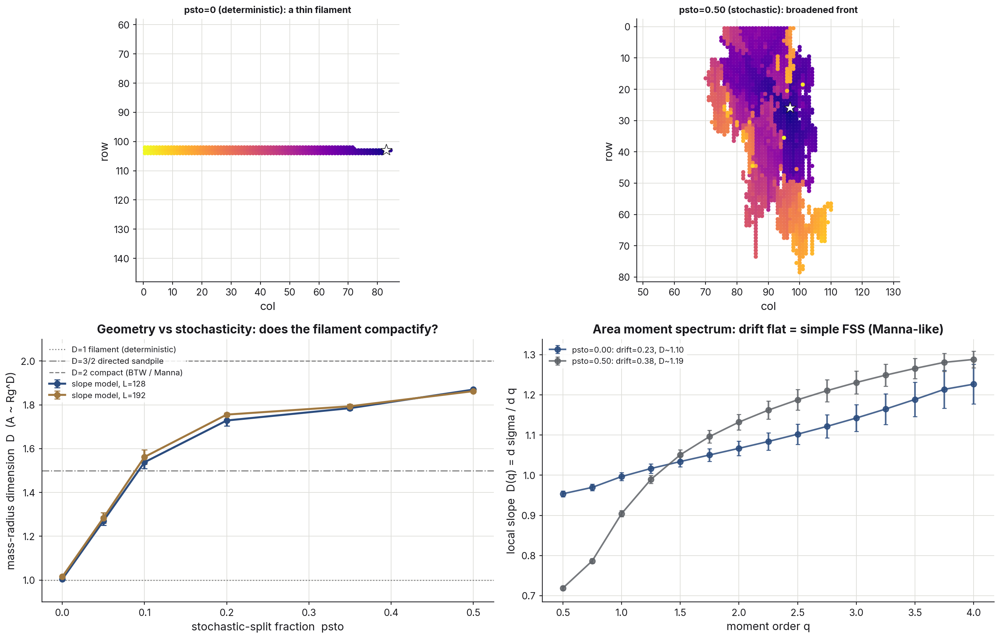
The identity
A dimension-1 object in a 2-D lattice suggests a simple hypothesis: the 2-D avalanche is a 1-D avalanche that happens to live in a plane. Measuring the native 1-D avalanche with the same instruments confirmed it. Mass-radius dimension 1.00, solid and gap-free, a perfectly ballistic front, and conditional exponents (1.00, 2.00, 0.98) matching the 2-D values (1.00, 1.93, 0.97). The only thing dimension changes is directedness: the 1-D front runs downhill, the 2-D front radiates.
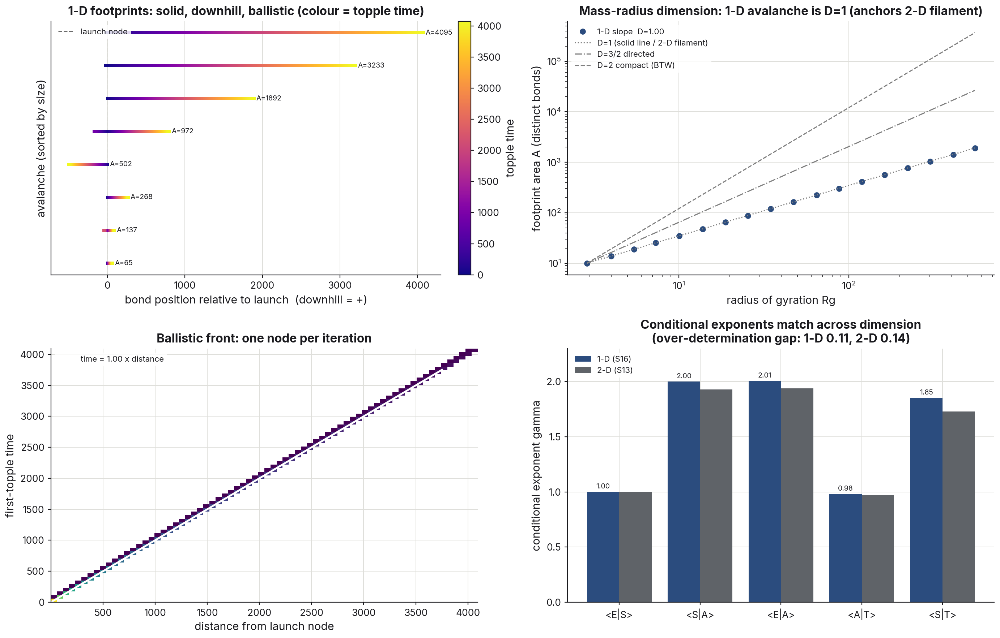
Where the law is exact
Single-scale scaling makes a strict, testable prediction. The six conditional exponents linking size, area, energy, and duration are over-determined, so they must close. Testing that closure across lattices from 96 to 512 a side, each at a verified stationary state, the spatial sector converges to exact single-scale values: size grows as area squared (1.89 rising to 1.95) and area grows linearly with duration (0.91 rising to 0.99). The size-duration exponent, though, stalls at 1.75 instead of 2, and the discrepancy grows with system size toward a true residual near 0.2. Duration is intrinsically loose. Long avalanches linger and re-topple in place, so time is a bad proxy for spatial extent even in the infinite-size limit. The law is exact in space and permanently residual in time. And the same anomaly exists in 1-D at 0.11: inherited, not emergent.
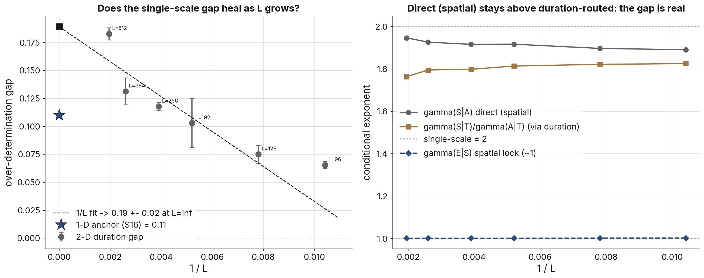
Means versus tails
The spatial law's success sets up a paradox. If size scales exactly as area squared and sizes scale simply with system size, the area distribution should be single-fractal. It is not. The area moment spectrum's multifractal drift, tracked in a sliding window across a fourfold range of lattice sizes, does not decay. It holds near 0.2 the whole way and extrapolates to 0.169 ± 0.048, more than three sigma from zero, where a finite-size artifact would have fallen fourfold. The resolution is that the exact spatial law is a statement about conditional means, and means do not constrain tails. Moment by moment, the effective area dimension is 1.14 at the first moment (the typical filament) and rises to 1.34 by the fourth (the largest avalanches). Both readings are true at once. Single-scale in the means, multifractal in the tails. A follow-up self-test made sure the tail was not quietly changing the typical object: with doubled seed counts, the typical avalanche's dimension stays pinned at 1.00 out to the largest lattices, its footprints stay one bond wide, and the apparent fattening I had flagged at five seeds averaged away at ten. It was tail undersampling, which is exactly what the means-tails split requires.
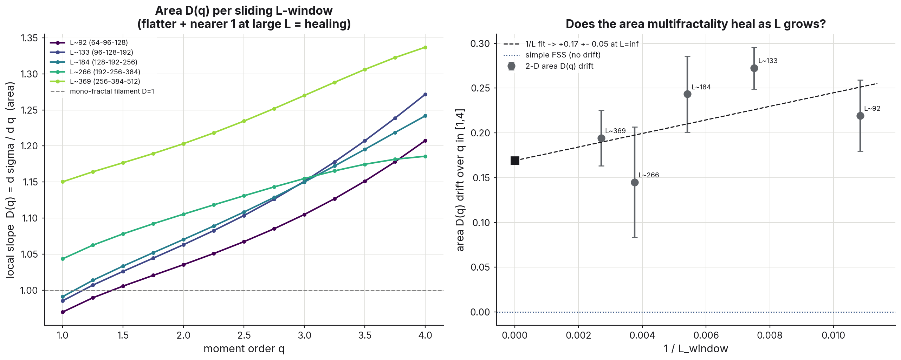
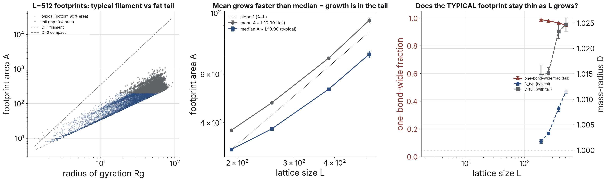
The placement, measured
Claims of a new universality class are cheap if the comparison classes are literature values, so all three anchors went through the identical pipeline. BTW: deterministic, compact, toppling-number multifractal, with a drift near 0.3. Manna: stochastic, flat spectra on a single finite-size-scaling line, compact footprints with dimension 2.07, size exponent 1.262 against the literature's 1.27. The slope model: tail-multifractal and filamentary at dimension 1.00. The differences run twenty to a hundred times the measurement noise. Combined with the stochasticity knob, the model fails to reach Manna from either direction.
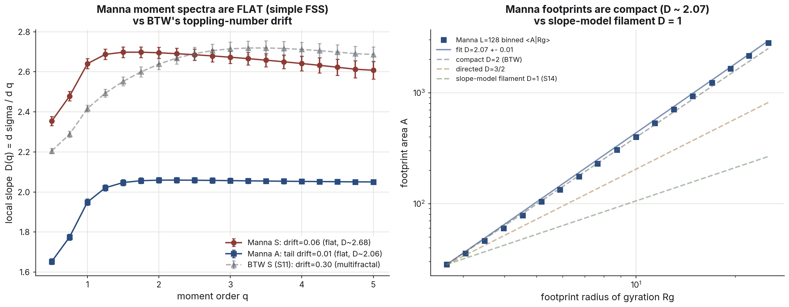
A constant that isn't
The angle of repose, the mean slope the pile self-organizes to, keeps rising with system size. Fitting saturating (1/L) against logarithmic growth on lattices up to 512 preferred the logarithm by AIC, but AIC on seven points is an opinion, not a verdict. So the decisive test was out of sample. I froze both fitted models, wrote down their predictions for lattices of 768 and 1024 a side, and then ran those lattices. Both new points landed above the saturating model's own infinite-size ceiling, and a quantity approaching a finite limit cannot exceed that limit at finite size: wrong in direction, not just in fit quality. The frozen logarithmic prediction landed within 0.03 to 0.04 of both. The repose most likely has no infinite-volume value at all. Even the model's most basic material constant is a finite-size object.
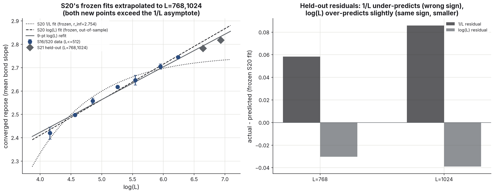
Chapter III — The earthquake model: a clock that misses what matters
The Olami–Feder–Christensen model is the earthquake community's canonical sandpile: forces on a lattice, uniform slow drive, and a toppling rule with a conservation knob. Each topple passes a fraction α to each of four neighbors, so 4α is conserved and the rest is lost. At α = 0.25 the model is conservative, like the sandpile; below that, the bulk dissipates. It reproduces the Gutenberg–Richter law with the book's exponents: fitted distribution slopes of −1.19, −1.87, and −3.52 at α = 0.25, 0.20, 0.10, against the book's −1.19, −1.92, −3.34.
The sandpile chapter had shown, in a binary way, that bulk conservation is necessary for scale-free behavior. OFC turns the binary into a dial. In finite-size scaling of the avalanche cutoff, the conservative model's cutoff grows steeply with system size (exponent 3.19, avalanches limited only by the box). At α = 0.20 it grows roughly as the system area. At α = 0.10 it is flat (−0.15): avalanches are capped by dissipation at a characteristic size no lattice can raise. True criticality is the conservative limit, and dissipation buys a characteristic earthquake size.
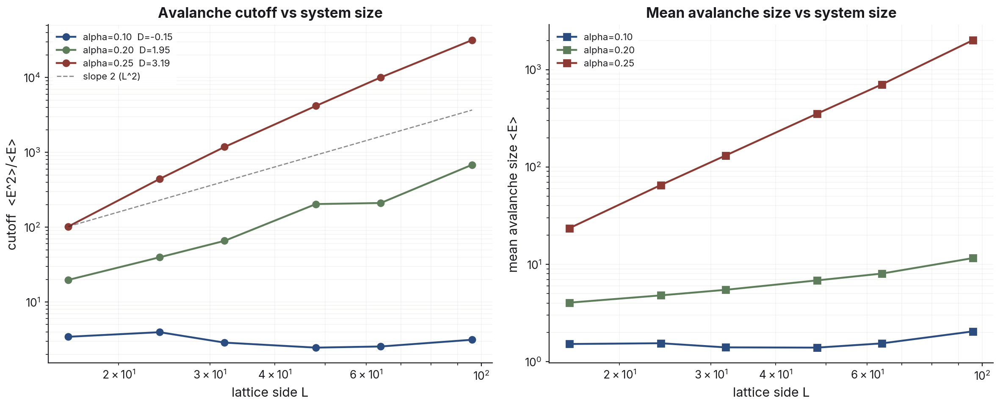
Dissipation also buys a clock. Unlike the stochastically forced sandpile, nonconservative OFC is deterministic, and it synchronizes: domains of locked, near-equal force values collapse and rebuild almost periodically, with recurrence periods matching the book's tabulated values to within a few percent once forcing-corrected. But the clock is fine-tuned. Synchronization requires equal neighbors to map to exactly equal values, and a pre-registered self-test confirmed that jittering α by ±0.01 per topple, one part in fifteen, cuts the recurrence peak by more than half. The temporal order that makes the model look predictable is a fragile consequence of exact determinism.
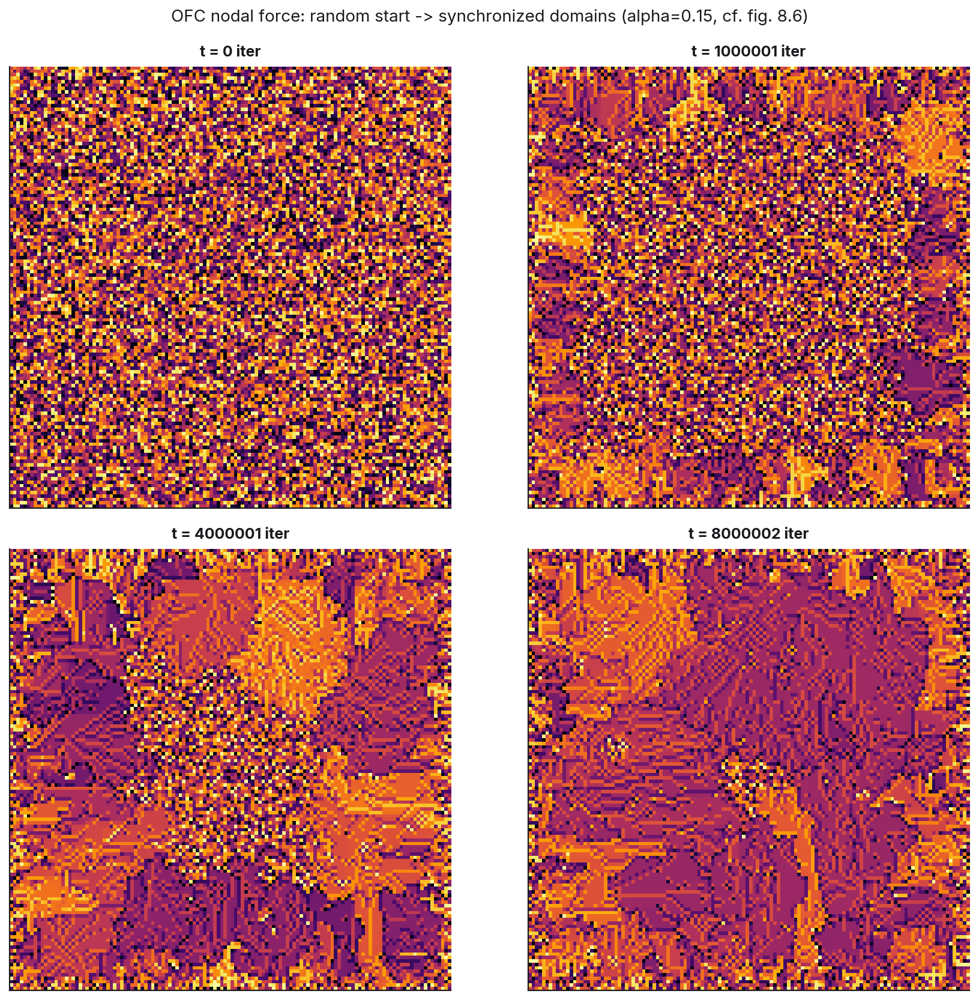
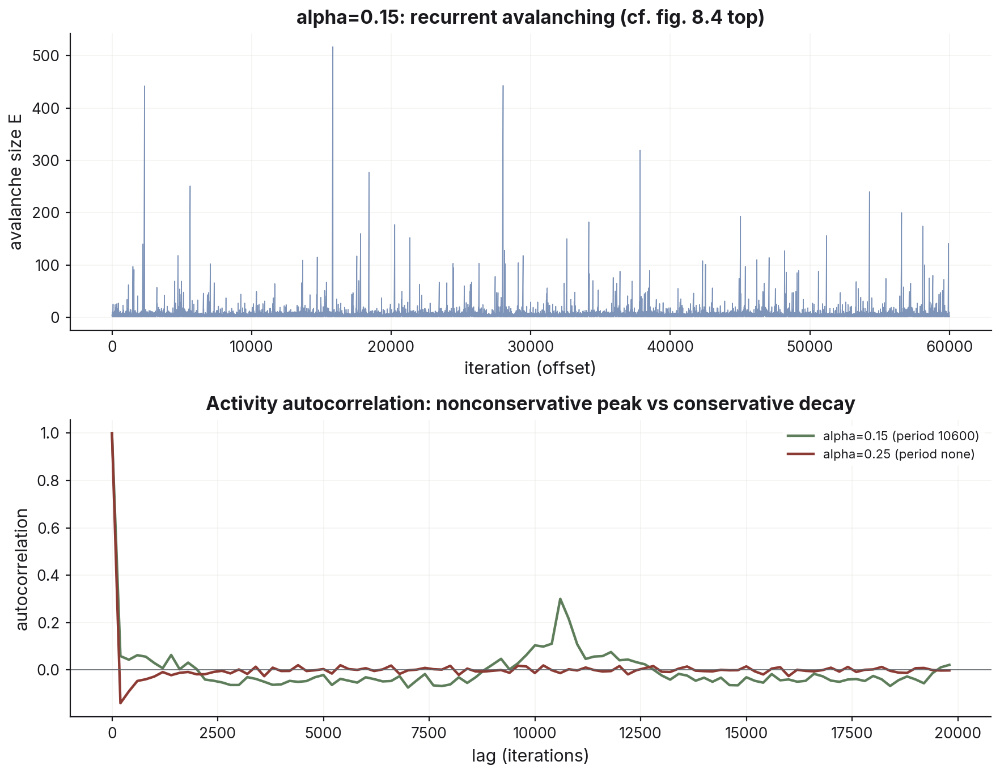
And the clock misses the events that matter. The chapter's closing experiment is a forecaster that knows the model's rhythm: trained on the first half of a 1.16-million-iteration run, phase-locked to the learned cycle, predicting the timing and size of large events in the second half. It beats chance: at a ±300-iteration window its precision is 0.68 against a chance level of 0.44, and at the book's tighter ±100-iteration window 0.25 against 0.15, a skill of about 1.5 to 1.7 either way. On the largest ten percent of events, though, it scores recall 0.09 within that ±300 window: four hits out of 43. The biggest events are the irregular, drifting domain collapses that do not ride the cycle. The model has no hidden variables and no noise, so none of this can be blamed on ignorance. Mechanistic knowledge concentrates its predictive power exactly where you need it least. The largest events simply do not keep the schedule.
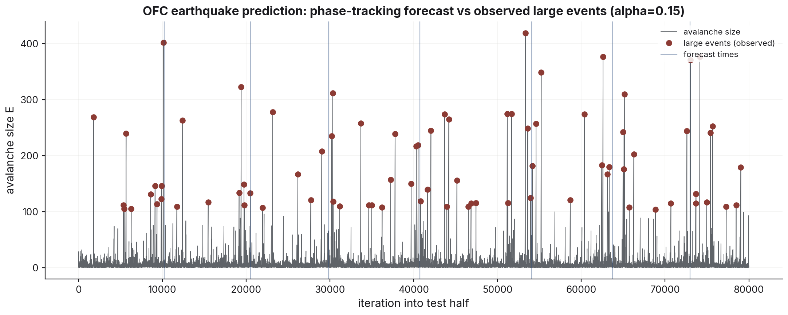
What held and what broke
A summer of findings is worth exactly as much as its error-checking.
Nine predictions were pre-registered: written down with an expected outcome before the measurement ran. Several broke, which is what pre-registering is for. My claim that topological alignment would slow contact mixing failed its own test. My assumption that a third dimension would aid kinematic mixing failed by a lot: 3-D mixes 1.8 times slower at matched contact degree. An evolved predator trait I had interpreted as “capture optimum differs from disruption optimum” fell to direct measurement; the two optima coincide, and the evolved value was a small-population selection artifact. In the sandpile, an apparent fattening of the avalanche filament at large sizes resolved into tail undersampling once the seed count doubled. Each of these is a place the write-up would have been wrong had the check not run.
| Claim as first recorded | How it broke | Correction |
|---|---|---|
| Panic does not propagate through a flock (F18) | The “panicked” label was static; apparent damping was dilution of a fixed set | With contagion dynamics, panic saturates the flock at any transmission rate; there is no threshold (F20) |
| Encirclement effectiveness depends on flock size (F28) | The ring radius was fixed while the flock's radius grew with N | Results collapse on the ratio Renc/Rg (optimum ≈ 0.5), size-invariant (F31) |
| 3-D encirclement results (initial runs) (F43–F45) | The 3-D predator force had an inverted sign: attraction, not repulsion | Re-run corrected: no 3-D point-predator strategy disrupts the flock at all (Φ ≥ 0.99) (F49, F65) |
| Topological (k-nearest-neighbor) alignment slows contact-graph mixing (prediction) | Pre-registered test: mixing time was unchanged | The degree-targeting null is structural, not a metric-alignment artifact (F47, F48) |
| A third dimension aids kinematic mixing (assumption) | Direct measurement at matched contact degree | 3-D mixes 1.8× slower than 2-D; the “mixing aid” framing was dropped (F52) |
| Minority steering needs a small absolute number of informed agents (F72 reading) | Self-test across flock sizes at fixed number vs fixed fraction | Steering is set by the informed fraction; linear alignment has no small-number amplification (F81) |
| Tracking bandwidth should fall as exp(−s²/2) under estimate noise (prediction) | Measured response at matched noise and goal speed | Spatial averaging and temporal bandwidth are independent; the prediction was falsified (F86) |
| The predator's capture optimum differs from its disruption optimum (F90 reading) | Direct capture-vs-lead measurement: both peak at the same lead ≈ 2 | The evolved lead ≈ 3 was a small-population selection artifact chasing a noisy tail (F91) |
| The exact spatial law implies a single-fractal area distribution (S17 naive read) | The sliding-window moment spectrum's drift never decays (0.169 ± 0.048 at infinite size) | The law governs conditional means; the distribution's tails stay multifractal (S18) |
| The avalanche filament fattens at large lattice sizes (S18 tentative read) | Doubling the seed count: the mean-area growth slope fell from 1.22 to 0.99 | Tail undersampling; the typical footprint stays one bond wide to L = 512 (S19) |
Two habits came out of the summer as method rather than results. First: automated verdicts flag, components decide. Three times a script's automated verdict was wrong while the underlying components were unambiguous, once from a duration fit averaged over a regime it could not resolve, once from a moment spectrum tripped by a known finite-size kink at the low-moment edge. Second: freeze the fit before the data comes in. The repose question was settled by writing down two models' predictions for unseen lattice sizes and then running them.
One more item for the record: the textbook's statement that the pile settles about 7% below the critical slope conflates the mean with the peak. Its own figure implies the 16% we measure.
What generalizes
Three systems is a small sample, so these are observations rather than theorems.
Typical-case laws do not transfer to tails. In each system the mean behavior followed a law precise enough to fit to two decimals, and in each system the largest events lived under different statistics. That is a property of how these systems are built, not a measurement problem. Any argument that reasons from typical behavior to worst-case behavior has, in these systems at least, a hole exactly where the stakes are highest.
Averaging-based robustness has one attack surface: correlation. A collective estimator absorbs unlimited independent error and is captured by a coordinated minority at parity. The damage threshold is set by the correlated fraction, not the total error. Anything that aggregates (ensembles, votes, markets, sensor fusion) inherits some version of this.
Full knowledge of a mechanism does not purchase tail prediction. The OFC forecaster had the true model, no noise, and unlimited data, and still missed nine of ten of the largest events. Predictability is a property of the event class, not of how well you understand the system.
And whether a protective behavior can spread through a population reduces to whether free riders can share it. Shared signals invade; mutual couplings do not. A defense you want to establish itself should be built non-excludable.
Colophon
123 documented findings (94 flocking, 22 sandpile, 7 earthquake) · 162.0 logged hours over 42 research days · 188 commits · 150 figures · 133 Python scripts. Built with NumPy, numba, and matplotlib. The performance engines (a 600× active-list sandpile engine, a 251× vectorized predator force) are validated bit-for-bit against their reference implementations, and every engine ships self-tests. Every figure on this page regenerates from a named script in the repository. Textbook: Paul Charbonneau, Natural Complexity (Princeton, 2017); flocking model from Silverberg et al., PRL 110, 228701 (2013). Findings, full-detail reports, and the day-by-day research log are in the repository. AI tools (Anthropic's Claude) were used as a coding and analysis assistant throughout, documented per session in the research log; the scientific decisions and interpretations are my own.
References:
- P. Charbonneau, Natural Complexity: A Modeling Handbook, Princeton University Press (2017).
- J. L. Silverberg, M. Bierbaum, J. P. Sethna, I. Cohen, “Collective motion of humans in mosh and circle pits at heavy metal concerts,” Phys. Rev. Lett. 110, 228701 (2013).
- D. Dhar, R. Ramaswamy, “Exactly solved model of self-organized critical phenomena,” Phys. Rev. Lett. 63, 1659 (1989).
- C. Tebaldi, M. De Menech, A. L. Stella, “Multifractal scaling in the Bak–Tang–Wiesenfeld sandpile,” Phys. Rev. Lett. 83, 3952 (1999).
- Z. Olami, H. J. S. Feder, K. Christensen, “Self-organized criticality in a continuous, nonconservative cellular automaton modeling earthquakes,” Phys. Rev. Lett. 68, 1244 (1992).
- S. S. Manna, “Two-state model of self-organized criticality,” J. Phys. A 24, L363 (1991).